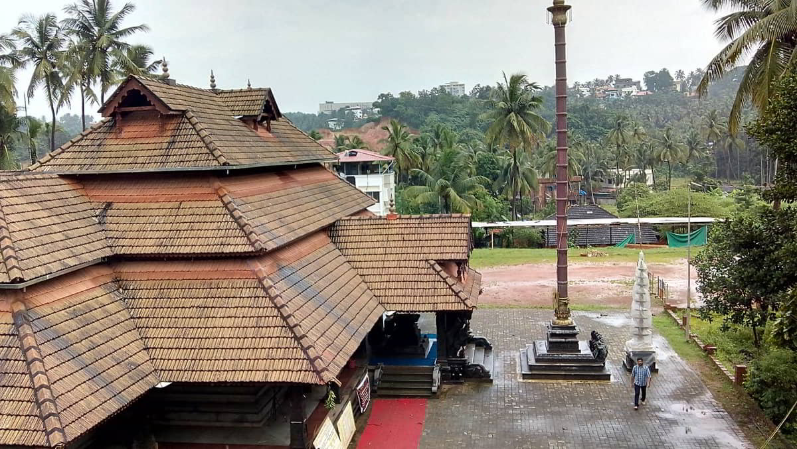

Home
Shree Suryanarayana temple, Maroli
Situated about 2.5 kilometres away from Mahaveer circle, the beautiful temple is spread on 1.5 acres of land.The temple is historically very unique and is said to have been established 1,200 years ago. It is believed that sages had visualised a 'globe of light' and they laid the foundation for a temple at Maroli. In the beginning it was worshiped as Parabrahma. Some worshipers of Shiva (Shaivas) worshiped this divine power as the base of Shiva-Shakti. This Shiva-Shakti is the visual and concrete form of unvisualised form of Parabrahma. With this fundamental faith the worship of Parashiva and Parashakthi was being performed. The idol of Maha Ganapati was installed. Later, the Vaishnavas took charge of this temple and to suit their customs, they worshiped the Parabrahmashakti as Shreemannarayana. They believed that Parashakti and Parashiva were the form of Parabrahma and they worshiped the idol of Shiva. They offered Rudraabhisheka to Shiva and to maintain the existence of Parashakti they preserved the customs of celebrating Navaratri.The temple covered seven villages which are known today as Maroli, Jeppu, Kankanady, Alape, Bajal, Kannur and Padavu. These seven villages constitute the basis for its overall activities since ages. About 450 years ago, due to lack of support from the kings, the temple was in ruins. During those days a Jain female chief of the village cluster, or the Queen, possessed the presidency comprising of seven villages. On behalf of the devotees, she accepted Shree Suryanarayana as the clan God (Kuladevatha) of the village cluster of these seven villages. The people and the Queen gave enough land free of cost for the management and development of the temple. But it again deteriorated in the decades that followed.
History
The coastal region of Karnataka is renowned for its ancient temples that are steeped in legends.As the centuries have passed by, many of the temples have been renovated not only to retain them but to meet the needs of growing number of devotees. Now, it is the turn of the historical Shree Suryanarayana Temple in Maroli, believed to have come into existence due to intense penance performed by ascetics about 1,200 years ago, to undergo a complete renovation. Owing to the highly competent religious advice which emerged during Astamangala, the executive committee and members of Shree Suryanarayana temple development committee have started the renovation of the temple. Some of the basic works required to be met urgently have been taken up.Situated about 2.5 kilometres away from Mahaveer circle, the beautiful temple is spread on 1.5 acres of land.

The temple is historically very unique and is said to have been established 1,200 years ago. It is believed that sages had visualised a 'globe of light' and they laid the foundation for a temple at Maroli. In the beginning it was worshiped as Parabrahma. Some worshipers of Shiva (Shaivas) worshiped this divine power as the base of Shiva-Shakti. This Shiva-Shakti is the visual and concrete form of unvisualised form of Parabrahma. With this fundamental faith the worship of Parashiva and Parashakthi was being performed. The idol of Maha Ganapati was installed. Later, the Vaishnavas took charge of this temple and to suit their customs, they worshiped the Parabrahmashakti as Shreemannarayana. They believed that Parashakti and Parashiva were the form of Parabrahma and they worshiped the idol of Shiva. They offered Rudraabhisheka to Shiva and to maintain the existence of Parashakti they preserved the customs of celebrating Navaratri. The temple covered seven villages which are known today as Maroli, Jeppu, Kankanady, Alape, Bajal, Kannur and Padavu. These seven villages constitute the basis for its overall activities since ages. About 450 years ago, due to lack of support from the kings, the temple was in ruins. During those days a Jain female chief of the village cluster, or the Queen, possessed the presidency comprising of seven villages. On behalf of the devotees, she accepted Shree Suryanarayana as the clan God (Kuladevatha) of the village cluster of these seven villages. The people and the Queen gave enough land free of cost for the management and development of the temple. But it again deteriorated in the decades that followed.
>